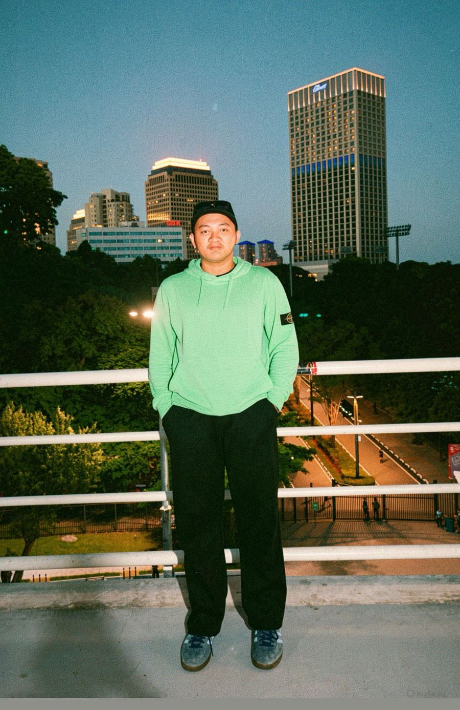

Informatics
Halo, saya Muhammad Annas Ardiansyah mahasiswa semester 4 Teknik Informatika di Universitas Muhammadiyah Surakarta. Pada saat ini saya berfokus pada pengembangan website modern dengan menggunakan bahasa pemrograman HTML, CSS dan JavaScript.
Lihat Karya